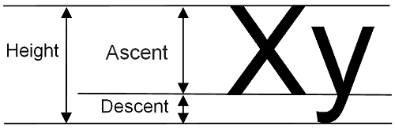

Этот раздел дает введение в Small Windows. Первая часть маленьких окон application - это функция MainWindow. Он соответствует main в обычном C ++. Его задача - установить название приложения и создать главное окно приложения.
В этой книге мы говорим об определениях и декларациях. Объявление - это просто уведомление для компилятора, в то время как определение определяет функцию. Ниже приводится декларация функция MainWindow. Его определение оставлено на усмотрение пользователя Small Windows.
void MainWindow(vector <String>argumentList, SmallWindows::WindowShow windowShow);
Проще говоря, в Windows приложение не проявляет никакой инициативы; скорее, он ждет сообщения и реагирует на их получение. Неформально говоря, вы не вызываете Windows, Windows зовет вас.
Самая центральная часть Small Windows - это класс Application. В Windows каждое событие генерирует сообщение, которое отправляется окну, которое в данный момент имеет фокус ввода. В Класс приложения реализует метод RunMessageLoop, который гарантирует, что каждый сообщение отправляется в правильное окно. Также закрывает приложение при специальном выходе сообщение отправлено.
Создание окна происходит в два этапа. На первом этапе Метод RegisterWindowClasses устанавливает такие функции, как стиль, цвет и внешний вид. Примечание что классы Windows не являются классами C ++:
class Application {
public: static int RunMessageLoop();
static void RegisterWindowClasses(HINSTANCE instanceHandle);
};
Следующим шагом является создание отдельного окна, которое выполняется классом Window. Все виртуальные методы пусты и предназначены для переопределения подклассами, показанными как следует:
class Window {
public:
Окно может быть видимым или невидимым, включенным или отключенным. Когда окно включено, оно принимает ввод с помощью мыши, касания и клавиатуры:
void ShowWindow(bool visible);
void EnableWindow(bool enable);
Методы OnMove и OnSize вызываются при перемещении или изменении размера окна. В Метод OnHelp вызывается, когда пользователь нажимает клавишу F1 или кнопку Help в сообщении. коробка:
virtual void OnMove(Point topLeft);
virtual void OnSize(Size windowSize);
virtual void OnHelp();
Клиентская область - это часть окна, которую можно закрасить. Неформально клиент площадь - это окно без рамки. Содержимое клиентской области можно увеличивать. В коэффициент масштабирования по умолчанию равен 1.0:
double GetZoom() const;
void SetZoom(double zoom);
Таймер можно установить на интервал в миллисекундах. Метод OnTimer вызывается на каждом интервал. Можно установить несколько таймеров, если они имеют разную идентичность. числа:
void SetTimer(int timerId, unsigned int interval);
void DropTimer(int timerId);
virtual void OnTimer(int timerId);
Методы OnMouseDown, OnMouseUp и OnDoubleClick вызываются, когда пользователь нажимает, отпускает или дважды щелкает кнопку мыши. Метод OnMouseMove называется когда пользователь перемещает мышь с нажатой хотя бы одной кнопкой. Колесо OnMouseWheel метод вызывается, когда пользователь перемещает колесо мыши одним щелчком мыши:
virtual void OnMouseDown(MouseButton mouseButtons,
Point mousePoint, bool shiftPressed,
bool controlPressed);
virtual void OnMouseUp(MouseButton mouseButtons,
Point mousePoint, bool shiftPressed,
bool controlPressed);
virtual void OnDoubleClick(MouseButton mouseButtons,
Point mousePoint, bool shiftPressed,
bool controlPressed);
virtual void OnMouseMove(MouseButton mouseButtons,
Point mousePoint, bool shiftPressed,
bool controlPressed);
virtual void OnMouseWheel(WheelDirection direction,
bool shiftPressed, bool controlPressed);
Методы OnTouchDown, OnTouchMove и OnTouchDown работают так же, как и методы методы мыши. Однако, поскольку пользователь может коснуться нескольких точек одновременно, методы принимают списки точек, а не отдельные точки:
virtual void OnTouchDown(vector<Point> pointList);
virtual void OnTouchMove(vector<Point> pointList);
virtual void OnTouchUp(vector<Point> pointList);
Методы OnKeyDown и OnKeyUp вызываются, когда пользователь нажимает или отпускает клавишу. Если пользователь нажимает графический ключ (ключ со значением ASCII от 32 до 127 включительно), метод OnChar вызывается между:
virtual bool OnKeyDown(WORD key, bool shiftPressed,
bool controlPressed);
virtual void OnChar(TCHAR tChar);
virtual bool OnKeyUp(WORD key, bool shiftPressed,
bool controlPressed);
Метод Invalidate отмечает часть клиентской области (или всю клиентскую область) как перекрашен; область становится недействительной. Область очищается перед покраской, если чистая истинный. Метод UpdateWindow вызывает перерисовку недействительной области. Это вызывает OnPaint, который будет вызван в конечном итоге:
void Invalidate(Rect areaRect, bool clear = true) const;
void Invalidate(bool clear = true) const;
void UpdateWindow();
Метод OnPaint вызывается, когда нужно перекрасить какую-то часть клиентской области и метод OnPrint вызывается при отправке на принтер. Их поведение по умолчанию - вызвать метод OnDraw с Paint или Print в качестве значения параметра drawMode:
virtual void OnPaint(Graphics& graphics) const;
virtual void OnPrint(Graphics& graphics, int page, int copy, int totalPages) const;
virtual void OnDraw(Graphics& graphics, DrawMode drawMode) const;
Метод OnClose закрывает окно, если TryClose возвращает true. OnDestroy метод вызывается при закрытии окна:
virtual void OnClose();
virtual bool TryClose();
virtual void OnDestroy();
Следующие методы проверяют и изменяют размер и положение окна. Обратите внимание, что мы не можем установить размер клиентской области; его можно установить только косвенно, изменив размер окна:
Size GetWindowSize() const;
void SetWindowSize(Size windowSize);
Point GetWindowPosition() const;
void SetWindowPosition(Point topLeft);
Size GetClientSize() const;
В текстовом редакторе и программах для работы с электронными таблицами из этой книги мы обрабатываем текст, и нам нужно рассчитать размер отдельных символов. Следующие методы рассчитывают ширину символ с заданным шрифтом. Также они рассчитывают высоту, подъем и средний характер. ширина шрифта:
int GetCharacterWidth(Font font, TCHAR tChar) const;
int GetCharacterHeight(Font font) const;
int GetCharacterAscent(Font font) const;
int GetCharacterAverageWidth(Font font) const;
Линия подъема разделяет верхнюю и нижнюю части буквы, как показано ниже:
Наконец, метод MessageBox отображает в окне простое окно сообщения:
Answer MessageBox(String message,
String caption = TEXT("Error"),
ButtonGroup buttonGroup = Ok,
Icon icon = NoIcon, bool help = false) const;
}
Класс Window также использует класс Graphics, отвечающий за рисование текста и геометрические объекты в окне. Ссылка на объект Graphics отправляется в OnPaint, OnPrint и OnDraw в классе Window. Его можно использовать для рисования линий, прямоугольников, и многоточия и написать текст:
class Graphics {
public:
void DrawLine(Point startPoint, Point endPoint, Color penColor, PenStyle penStyle = Solid);
void DrawRectangle(Rect rect, Color penColor, PenStyle = Solid);
void FillRectangle(Rect rect, Color penColor, Color brushColor, PenStyle penStyle=Solid);
void DrawEllipse(Rect rect, Color penColor, PenStyle = Solid);
void FillEllipse(Rect rect, Color penColor, Color brushColor, PenStyle penStyle=Solid);
void DrawText(Rect areaRect, String text, Font font, Color textColor,
Color backColor, bool pointsToMeters = true);
}
Класс Document расширяет класс Window некоторыми функциями, общими для приложения на основе документов. Ползунки прокрутки автоматически настраиваются на отображение видимого часть документа. Колесико мыши перемещает вертикальную полосу прокрутки на одну строку высоты каждый щелчок. Высота строки устанавливается конструктором. Фрагмент кода для него показан как следует:
class Document : public Window {
public:
Флаг грязи истинен, когда пользователь внес изменения в документ, и это необходимо. сохранен. В Document флаг грязи устанавливается вручную, но в следующем StandardDocument подклассом он обрабатывается фреймворком:
bool IsDirty() const;
void SetDirty(bool dirty);
Каретка - это мигающий маркер, который указывает пользователю, где следует ввести следующий персонаж. Клавиатуру можно настроить (с помощью клавиши Insert) в режим вставки или перезаписи. В каретка часто представляет собой тонкую вертикальную полосу в режиме вставки и блок со средней шириной символ в режиме перезаписи.
Каретку можно установить или удалить. Например, в текстовом редакторе курсор виден, когда пользователь пишет текст и невидимо, когда пользователь отмечает текст. Когда окно получает фокус, каретка становится видимой, если она была установлена ранее. Когда окно теряет фокус, курсор становится невидимым, независимо от того, был ли он установлен ранее:
void SetCaret(Rect caretRect);
void ClearCaret();
void OnGainFocus();
void OnLoseFocus();
Документ может содержать строку меню, которая устанавливается методом SetMenuBar:
void SetMenuBar(Menu& menuBar);
Метод OnDropFiles вызывается, когда пользователь помещает в окно один или несколько файлов. Их пути хранятся в списке путей:
virtual void OnDropFile(vector<String> pathList);
Клавиатурный режим документа можно настроить на вставку или перезапись следующим образом:
KeyboardMode GetKeyboardMode() const;
void SetKeyboardMode(KeyboardMode mode);
Методы OnHorizontalScroll и OnVerticalScroll вызываются, когда пользователь прокручивает полосу, щелкая стрелки полосы прокрутки или поля полосы прокрутки, или перетаскивая прокрутите пальцы. Фрагмент кода для него показан следующим образом:
virtual void OnHorizontalScroll(WORD flags,WORD thumbPos=0);
virtual void OnVerticalScroll(WORD flags, WORD thumbPos =0);
Существует большой набор методов для проверки или изменения настроек полосы прокрутки. Размер строка или страница задается конструктором:
void SetHorizontalScrollPosition(int scrollPos);
int GetHorizontalScrollPosition() const;
void SetVerticalScrollPosition(int scrollPos);
int GetVerticalScrollPosition() const;
void SetHorizontalScrollLineWidth(int lineWidth);
int GetHorizontalScrollLineHeight() const;
void SetVerticalScrollLineHeight(int lineHeight);
int GetVerticalScrollLineHeight() const;
void SetHorizontalScrollPageWidth(int pageWidth);
int GetHorizontalScrollPageWidth() const;
void SetVerticalScrollPageHeight(int pageHeight);
int GetVerticalScrollPageHeight() const;
void SetHorizontalScrollTotalWidth(int scrollWidth);
int GetHorizontalScrollTotalWidth() const;
void SetVerticalScrollTotalHeight(int scrollHeight);
int GetVerticalScrollTotalHeight() const;
}
Класс Menu обрабатывает строку меню, меню, пункт меню или разделитель пунктов меню ( горизонтальная полоса) в документе. Слушатель выбора вызывается, когда пользователь выбирает пункт меню. Слушатели включения, проверки и радио вызываются (если они не равны нулю), когда объект скоро станет видимым. Если они возвращают истину, элемент включен или аннотирован с флажком или переключателем:
class Menu {
public:
void AddMenu(Menu& menu);
void AddSeparator();
void AddItem(String text, VoidListener selection, BoolListener enable = nullptr,
BoolListener check = nullptr, BoolListener radio = nullptr);
};
Ускоритель - это команда быстрого доступа. Например, часто пункт «Открыть» в меню «Файл» аннотируется текстом Ctrl + O. Это означает, что вы можете получить тот же результат, одновременное нажатие клавиш Ctrl и O, как если бы вы выбрали меню Открыть элемент. В обоих случаях отображается диалоговое окно «Открыть».
Класс Accelerator содержит только метод TextToAccelerator. Он интерпретирует текст пункта меню и добавляет ускоритель, если он есть, в набор ускорителей:
class Accelerator {
public:
static void TextToAccelerator(String& text, int idemId,
list <ACCEL>& acceleratorSet);
};
Класс StandardDocument расширяет класс Document и устанавливает платформу, которая заботится обо всех традиционных задачах, таких как загрузка и сохранение, а также вырезание, копирование и вставка в документальное приложение:
class StandardDocument : public Document {
public:
Класс StandardDocument имеет общие функции File, Edit и Help. меню. В меню File можно дополнительно (если параметр печати true) добавить пункты меню для печати и предварительного просмотра печати:
Menu StandardFileMenu(bool print);
Menu StandardEditMenu();
Menu StandardHelpMenu();
Метод ClearDocument вызывается, когда пользователь выбирает пункт меню New; его задача чтобы очистить документ. Метод WriteDocumentToStream вызывается, когда пользователь выбирает пункт меню Сохранить или Сохранить как, а метод ReadDocumentFromStream вызывается, когда пользователь выбирает пункт меню Открыть:
virtual void ClearDocument();
virtual bool WriteDocumentToStream(String name, ostream& outStream)const;
virtual bool ReadDocumentFromStream(String name, istream& inStream);
Методы CopyAscii, CopyUnicode и CopyGeneric вызываются, когда пользователь выбирает пункт меню «Вырезать» или «Копировать», и соответствующий метод готовности возвращает значение true. В Фрагмент кода для него показан следующим образом:
virtual void CopyAscii(vector <String>& textList) const;
virtual bool IsCopyAsciiReady() const;
virtual void CopyUnicode(vector <String>& textList) const;
virtual bool IsCopyUnicodeReady() const;
virtual void CopyGeneric(int format, InfoList& infoList) const;
virtual bool IsCopyGenericReady(int format) const;
Таким же образом вызываются методы PasteAscii, PasteUnicode и PasteGeneric. когда пользователь выбирает пункт меню Вставить, и соответствующий метод готовности возвращает истинный:
virtual void PasteAscii(const vector<String>& textList);
virtual bool IsPasteAsciiReady (const vector<String>& textList) const;
virtual void PasteUnicode(const vector<String>& textList);
virtual bool IsPasteUnicodeReady (const vector<String>& textList) const;
virtual void PasteGeneric(int format, InfoList& infoList);
virtual bool IsPasteGenericReady(int format, InfoList& infoList) const;
Метод OnDropFile проверяет список путей и принимает удаление, если только один файл имеет суффикс типа документа приложения (задается конструктором):
void OnDropFile(vector<String> pathList);
};
В Small Windows нас не волнует размер пикселя. Вместо этого мы используем логические единицы, которые оставаться неизменным, независимо от физического разрешения экрана. Мы можем выбирать из следующие три системы координат: